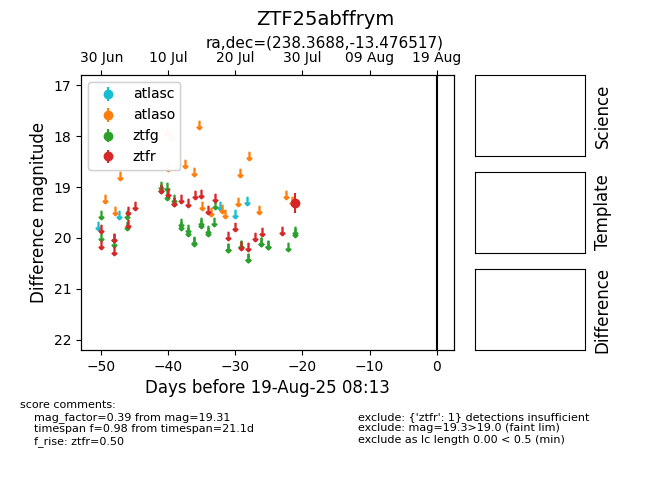

Target ZTF25abffrym at 2025-08-19 09:59, see:
FINK: fink-portal.org/ZTF25abffrym
Lasair: lasair-ztf.lsst.ac.uk/objects/ZTF25abffrym
ALeRCE: alerce.online/object/ZTF25abffrym
alt names
ZTF25abffrym (ztf,fink)
coordinates:
equatorial (ra, dec) = (238.3688,-13.47652)
galactic (l, b) = (356.1748,+30.01712)
photometry
last ztfr=19.31
1 ztfr detections
